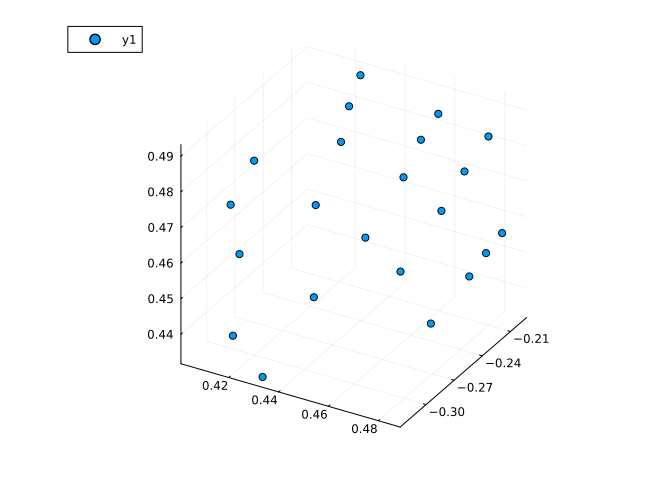
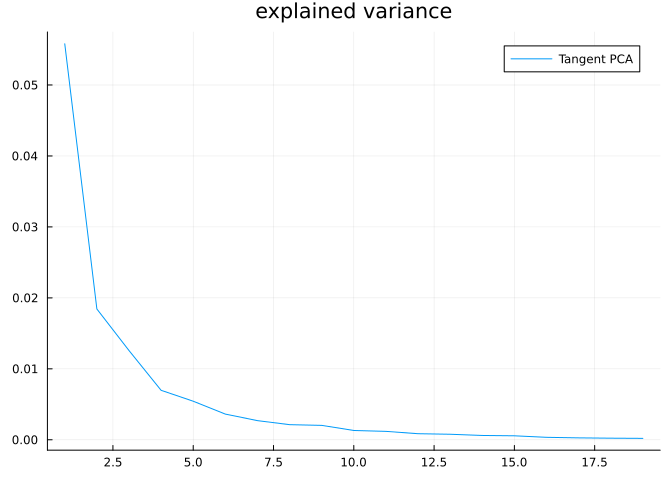
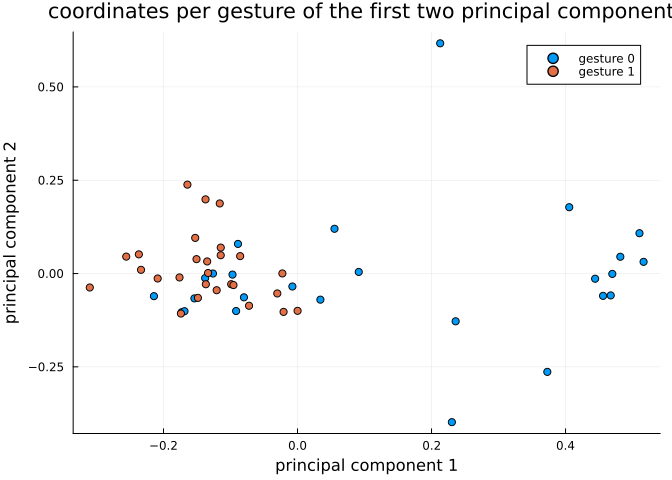
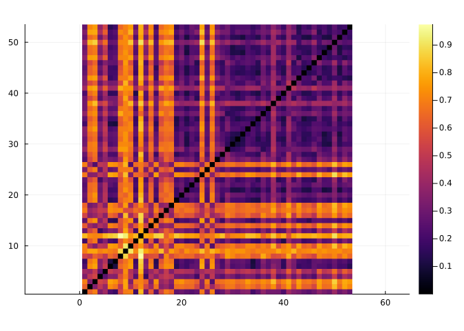

Hand gesture analysis
In this tutorial we will learn how to use Kendall’s shape space to analyze hand gesture data.
Let’s start by loading libraries required for our work.
using Manifolds, CSV, DataFrames, Plots, MultivariateStatsPrecompiling packages...
3475.9 ms ✓ QuartoNotebookWorkerPlotsExt (serial)
1 dependency successfully precompiled in 4 secondsOur first function loads dataset of hand gestures, described here.
function load_hands() hands_url = "https://raw.githubusercontent.com/geomstats/geomstats/master/geomstats/datasets/data/hands/hands.txt" hand_labels_url = "https://raw.githubusercontent.com/geomstats/geomstats/master/geomstats/datasets/data/hands/labels.txt" hands = Matrix(CSV.read(download(hands_url), DataFrame, header = false)) hands = reshape(hands, size(hands, 1), 3, 22) hand_labels = CSV.read(download(hand_labels_url), DataFrame, header = false).Column1 return hands, hand_labelsendload_hands (generic function with 1 method)The following code plots a sample gesture as a 3D scatter plot of points.
hands, hand_labels = load_hands()scatter3d(hands[1, 1, :], hands[1, 2, :], hands[1, 3, :])
Each gesture is represented by 22 landmarks in $ℝ³$, so we use the appropriate Kendall’s shape space
Mshape = KendallsShapeSpace(3, 22)KendallsShapeSpace(3, 22)Hands read from the dataset are projected to the shape space to remove translation and scaling variability. Rotational variability is then handled using the quotient structure of KendallsShapeSpace
hands_projected = [project(Mshape, hands[i, :, :]) for i in axes(hands, 1)]In the next part let’s do tangent space PCA. This starts with computing a mean point and computing logarithmic maps at mean to each point in the dataset.
mean_hand = mean(Mshape, hands_projected)hand_logs = [log(Mshape, mean_hand, p) for p in hands_projected]For a tangent PCA, we need coordinates in a basis. Some libraries skip this step because the representation of tangent vectors forms a linear subspace of an Euclidean space so PCA automatically detects which directions have no variance but this is a more generic way to solve this issue.
B = get_basis(Mshape, mean_hand, ProjectedOrthonormalBasis(:svd))hand_log_coordinates = [get_coordinates(Mshape, mean_hand, X, B) for X in hand_logs]This code prepares data for MultivariateStats – mean=0 is set because we’ve centered the data geometrically to mean_hand in the code above.
red_coords = reduce(hcat, hand_log_coordinates)fp = fit(PCA, red_coords; mean = 0)PCA(indim = 59, outdim = 19, principalratio = 0.9909326925796909)
Pattern matrix (unstandardized loadings):
────────────────────────────────────────────────────────────────────────────────────────────────────────────────────────────────────────────────────────────────────────────────────────────────────────────────────────────────────────────────────────────────────────────
PC1 PC2 PC3 PC4 PC5 PC6 PC7 PC8 PC9 PC10 PC11 PC12 PC13 PC14 PC15 PC16 PC17 PC18 PC19
────────────────────────────────────────────────────────────────────────────────────────────────────────────────────────────────────────────────────────────────────────────────────────────────────────────────────────────────────────────────────────────────────────────
1 0.0103314 0.000757288 0.0328263 0.00359879 -0.00583023 0.00913621 -0.0117438 -0.00738779 0.00673992 0.00415727 0.00508079 -0.00119777 -0.001887 0.00492262 0.00364289 -0.000737633 -0.000371446 0.0023055 0.000185498
2 -0.0216463 -0.0232241 -0.000187903 -0.0208026 -0.000594729 -0.00031582 0.00511437 0.00339303 -0.00572133 0.00140495 0.00144622 0.00156063 -0.00201589 0.00724851 -0.00141282 0.000559985 0.00120207 0.00163435 -0.00198228
3 0.0167552 -0.00240505 0.00156559 -0.00792696 0.00603572 -0.00859035 0.00712938 0.00256866 -0.00761109 0.00540278 0.0107689 0.000749607 -0.00428451 0.00300125 0.00102377 -0.000827074 -0.00153426 0.00122124 0.00445553
4 -0.0397858 0.0206383 -0.00218772 0.00470304 -0.00394687 -0.00221317 0.00844882 -0.000458514 0.00311559 0.00329937 0.000814161 0.00288003 0.00363153 0.00258901 0.00153247 0.00113636 0.00159305 0.00493895 0.00149866
5 -0.0055683 -0.00612022 -0.0110294 0.0147141 -0.015246 0.00666889 -0.00059387 -0.00617847 0.00319596 0.00754569 0.00216692 -0.00359241 0.003707 -0.00150504 0.00178896 0.00158839 1.4732e-5 -0.00443754 0.000752789
6 0.00322614 -0.0194498 -0.00112588 0.0149771 0.00466713 -0.010392 -0.00393104 0.00802295 -0.00225529 -0.00222884 -0.00368957 -0.00126434 0.00273606 0.00681335 0.00251804 0.000686844 0.00439638 0.000821041 -0.000793215
7 -0.0520472 0.0141657 -0.0124107 0.0134719 -0.00730279 0.000423156 0.0133042 0.00647561 0.00257243 -0.00098238 0.00811502 0.00231418 0.0052279 0.00248444 -0.00351864 -0.00336533 0.000522405 -0.00100409 -0.000443696
8 -0.025389 0.0179217 0.0152861 0.0132664 -0.00928962 -0.000170898 -0.00489298 0.00728685 0.00590201 0.00417303 -0.00683785 0.00148974 0.000898027 -0.00159941 0.00285915 0.00156471 0.00177016 0.000368074 0.000245154
9 -0.00594424 -0.00297656 -0.00917752 0.00682083 -0.000467582 -0.00227321 0.00133655 -0.00705209 0.0036822 0.00141098 -0.00919097 0.00463435 -0.00288266 -0.00240164 -0.00290887 0.00661899 0.000889606 0.00127187 0.0014353
10 0.024523 -0.0150688 0.0210673 0.00628441 -0.0125314 0.00052323 0.0115502 -0.00335804 0.00489629 0.00277316 0.00357674 -0.0024764 -0.00139629 0.000552582 -0.00165675 0.000926325 0.00231787 -0.000444885 0.00181321
11 0.0434417 -0.00827479 -0.0313899 -0.00815301 0.00211743 0.00939984 -0.00487626 0.0107834 0.00564917 0.00152409 0.00648151 -0.00329289 0.0143367 -0.000735689 -0.00298747 0.00430508 -0.000680473 0.000737795 -0.000857108
12 -0.0142838 0.00121945 -0.0209441 -0.0170096 0.00697979 0.0143099 0.0076303 0.00112163 -0.00888679 0.000382113 0.00562482 1.12891e-5 -0.00360541 -0.0010051 0.00365244 0.000245685 -0.00355196 -0.00013115 0.000507761
13 -0.015107 0.0117147 0.00689585 0.0056639 0.0139868 0.00922222 0.000736248 0.00894366 0.00129015 0.00611003 0.00650291 0.00804792 -0.0026781 -0.00142415 -0.00460014 0.0023987 -0.000738169 0.00097618 -0.00246782
14 0.0353405 -0.0672227 -0.0257805 0.0107593 -0.000154842 -0.00509076 -0.000768814 0.00096178 -0.00362417 -0.00130474 0.00132388 0.00789091 -0.00109917 0.00341206 0.00513295 0.00287643 0.00284016 -0.000314881 -0.00212003
15 0.0584289 0.0267039 0.00342674 -0.0109446 -0.00343759 -0.00716569 -0.00098205 -0.00197708 -0.0014483 0.00218614 -0.00569909 -0.000814642 0.00234462 0.00369461 0.00406285 -0.000508781 -0.00167477 -0.000422957 0.00112775
16 -0.00951927 0.0195712 0.0132628 -0.016591 0.00197169 0.00195682 0.0118198 0.00337675 0.00845777 0.000687743 0.000500301 0.00549527 0.00450253 -0.00155157 -0.00133013 -0.00406028 0.00408417 -0.000520269 -0.000748477
17 0.0174492 0.0114201 -0.023658 0.000269272 -0.00274597 -0.00880071 -4.70759e-5 0.00685368 -0.009363 0.00640358 -0.00451435 0.00433547 -6.32028e-5 0.000534649 0.00224857 -0.00181391 -0.00237217 -0.00167082 0.00208526
18 -0.0409086 0.0077554 -0.00940089 -0.00553278 -0.00494537 -0.0026649 0.0027149 -0.00500478 -0.0020912 0.00235733 0.00360852 0.00640606 0.00132721 -0.00547222 -0.00131044 -0.00107079 0.00166987 -0.000607264 0.000627785
19 -0.0432049 -0.0300185 0.0170198 -0.00209736 0.00495957 0.00705129 -0.000377206 0.00426771 0.00474076 -0.000572899 0.00232474 0.00192958 0.000924275 0.000264621 0.00603489 -0.00036176 0.000515118 -0.00410374 0.00491403
20 0.00542363 -0.0218239 -0.00826156 0.00507829 0.011596 0.0187373 -0.00890391 0.00950545 0.00546517 -0.00667603 -0.00358283 0.00142523 -0.000445058 0.00211937 -0.00190217 -0.00426742 -0.0023789 0.00404828 0.00275666
21 -0.0227039 -0.00640034 -0.000957654 0.00604846 0.003886 -0.00761374 -0.0053729 0.00471682 0.00415174 0.00615557 -0.00382419 -0.00104599 -0.00098408 -0.000972736 -0.00109349 -0.00188043 -0.00172243 -0.00301233 0.000985395
22 0.028195 0.0116302 0.0191361 0.0135383 -0.0189087 0.00389366 0.00220022 0.000401038 -0.00186079 0.00718229 0.00386151 0.000514152 0.00269458 -0.00127781 0.0071801 0.000644928 -0.00303277 -0.000475371 -0.00090283
23 0.0129442 0.0181831 0.00924452 0.0067896 0.000447346 0.00509374 0.00516481 0.0030369 -0.00287837 0.00121123 0.0012931 -0.00798323 -0.00325794 0.00437606 -0.00109937 0.00348574 4.37639e-5 -0.0017532 -0.000728438
24 -0.00516968 0.00443837 0.00817244 -0.0191849 0.00325153 -0.0119803 -0.00207239 -0.000933554 -4.30133e-5 -0.000268791 -0.00354838 0.00453583 -0.00113074 0.00335002 -0.00240853 0.000296524 -0.0018403 0.000253671 -0.00209988
25 0.00242561 0.0004006 -0.0107197 0.00160534 0.00127128 -0.00666043 -0.00175972 -0.00831848 0.00129788 -0.00375187 -0.00180702 -0.00295471 0.00686588 0.00144094 -0.00207588 0.00063074 -0.000957849 0.000617609 -0.00225099
26 0.0339699 -0.0118032 -0.0126782 -0.00557488 -0.00136701 0.000763167 0.00476955 0.00187232 0.00904171 -0.00536234 -6.9269e-6 -0.0025494 0.00463768 -0.00319512 0.00497932 -0.00103744 -0.000770902 0.00209518 0.001487
27 -0.0206228 0.0183487 -0.0215286 0.0111429 0.0096737 0.00346303 -0.00114959 0.0052219 0.00620489 0.00176901 0.0026718 -0.00250159 -0.00450803 -0.00379503 0.00114892 0.00132452 -0.00122905 -0.00235028 -0.00159055
28 0.00314047 0.0161167 0.0013731 -0.00443984 0.00175941 -0.00578549 0.0080099 -0.00467674 0.00769776 -0.00420495 0.00336269 0.00317474 0.00531909 0.000147357 0.00428275 0.00160087 -0.000368655 -8.78946e-5 -0.00187245
29 -0.0627483 0.0115251 -0.00223773 0.00164858 -0.00322661 -0.0101629 0.00161276 0.00288314 0.00818138 -0.00416056 -0.00685962 -0.00317169 0.00275181 0.000603052 0.00560104 0.000730665 -0.0059296 4.75144e-5 -0.00147028
30 0.00800938 0.000989536 0.0100016 0.000848926 -0.0136318 0.0139617 0.00305083 -0.00265214 -0.0112854 0.00126527 -0.00376852 0.000796025 0.00553509 -0.00120568 -0.0062182 -0.000463738 0.00199019 0.00118689 0.000276726
31 0.00829881 -0.00975953 0.00750916 0.00989175 -0.000659103 0.00540698 -0.00959266 0.00165308 0.00581631 -0.00800882 -0.0010829 0.00638736 0.000793465 0.0011305 -0.00206921 0.000247366 -7.77757e-5 -0.0044371 0.000728313
32 0.0192182 0.0117126 -0.00156844 -0.00427246 0.00116093 0.00279826 -0.0112025 -0.00126121 -0.00151541 0.00222899 -0.00417193 0.00163361 0.00290483 -0.00592311 -0.00123561 -0.0027369 0.00327448 0.000197715 0.00107546
33 0.0437711 0.0225073 0.00402802 -0.0248657 -0.000842728 -0.00595233 0.00381228 -0.00604003 0.00537685 0.000536308 0.00107312 0.000999386 -0.00234113 8.87502e-5 -0.00243267 0.00289095 0.00150838 -0.00282637 0.00171855
34 -0.00292294 -0.0196111 0.0264027 -0.0120117 -0.0133471 -0.00874023 -0.0019061 0.00810787 -0.00574214 -0.00261626 0.003325 0.00198751 0.00636538 0.000385955 0.000489081 -0.00141971 -0.000172275 -0.0026455 -0.00128061
35 -0.0145764 -0.00454986 0.0322656 0.0014428 0.0205843 -0.00142816 0.0109249 0.00238403 -0.00506302 -0.00939998 0.00450272 -0.00268491 0.00313348 -0.00248523 0.00422149 0.00269267 0.00129135 0.00120071 0.000130619
36 0.0101347 0.0113017 -0.0116615 -0.00807071 0.00508517 0.0155683 -0.00508595 -0.005273 0.00129237 0.00284975 0.00110116 0.00134717 0.00152035 -0.00110153 0.00238464 9.96248e-5 0.000210967 -5.29224e-5 -0.00128459
37 0.027475 0.0283474 -0.0107693 0.0069567 -0.00378627 -0.00873569 -0.0073746 0.0039879 0.00365887 -0.00612459 0.00514768 -0.00994187 -0.00395856 0.0035112 -0.00222655 -0.00198837 0.00186253 0.000993534 0.000350258
38 0.0430008 -0.0055815 -0.00472361 0.010849 -0.00864073 -0.00700939 0.00431397 -0.0030133 -0.0068026 -0.0026138 -0.00327329 0.00457793 -0.00158129 -0.00635214 0.00235992 -0.000453426 0.000307932 0.000339001 -0.00374278
39 0.0227417 0.0438226 0.0185095 0.00353904 -0.0130005 0.0158933 -0.00625041 0.00590689 -0.0144075 -0.0119871 -0.00275684 0.00618431 0.00249367 0.00375612 0.00110081 0.00241862 -0.00201897 -0.000258001 0.00169421
40 -0.013336 0.00278864 0.00360523 -0.00629487 0.00593914 -0.00167485 -0.0048217 0.00126351 0.00854947 0.00572497 0.00382238 0.00332567 0.000470006 0.000157271 0.00562343 0.000829795 0.000894502 0.00251966 0.000518262
41 -0.0144583 0.0201812 -0.0114961 0.0234648 0.00897751 -0.0103339 0.000570752 0.00119264 -0.0113271 -0.000628754 0.000742853 0.00123152 -0.0013269 -0.00322674 0.00263388 0.000409197 0.00204788 0.00162234 0.00261735
42 0.0167519 -0.00731724 -0.000306962 -0.00265943 0.0144483 0.00354565 0.00148837 -0.0131907 -0.000401611 -0.00900131 0.00078802 -0.000292029 0.000270935 -0.00617564 0.000412027 0.000883668 -0.00255942 0.000397294 0.000773977
43 0.0435613 0.00161896 0.011554 0.017243 -0.00190768 -0.000882731 -0.0113778 -0.00930198 0.0022199 -2.59302e-5 0.00935547 0.00401556 -0.00193539 -0.000449249 0.00064831 -0.00468867 -0.00145015 0.00281832 -0.00290916
44 0.0156239 0.00745595 0.0129459 3.01851e-5 0.000235487 0.00219259 0.00085489 0.0111179 0.000481443 0.00158348 0.000383743 -0.00411704 -0.00256489 -0.00853532 0.00350424 -0.00065318 0.00407616 0.00288841 -0.00151664
45 -0.0288826 0.00560038 -0.0100867 0.00166533 -0.00985921 0.00902367 -0.00245139 -0.00391404 -0.00303489 0.00276921 0.00328958 -0.00427895 -0.00216615 0.00336214 0.000403608 0.00474274 0.00150468 0.00118915 -0.00325942
46 0.0435216 0.0121763 -0.0184692 -0.00643324 0.0172085 0.0017091 -0.000416161 -0.00102632 -0.00864394 0.0128834 -0.00351599 -0.00186137 0.00564724 0.00223823 0.00287848 -0.00226449 -0.000141209 0.000527225 0.000152704
47 0.012266 -0.00996292 0.00368697 -0.0172549 -0.0148849 0.0104264 0.00359322 0.00447616 0.000255015 0.00221395 -0.00805656 -0.00148926 -0.00222902 -0.000441887 0.00408486 0.00235634 0.00216699 0.00137898 -0.000283486
48 -0.0322603 -0.0366834 0.0141568 0.00529093 0.000366291 0.011083 0.00950713 -0.0149863 -0.00215143 0.00642233 -0.00659517 -0.00382576 0.00288799 0.000864304 -0.000925106 -0.00303221 -0.00237668 0.00189534 0.000543783
49 0.000768497 -1.89781e-6 0.0157822 0.00112765 0.0140371 0.00337879 -0.0119341 0.00445596 0.00154184 0.00988354 -0.00104127 0.00253094 0.000890856 0.0010638 -0.000133719 -0.000974613 0.00110281 -0.00181294 -0.00127216
50 0.0571775 0.00642904 0.00425133 0.00346994 0.0155249 0.001317 -0.0032071 -0.00926963 -0.00120978 -0.000886916 0.00605414 0.00258486 0.00230231 0.0012066 0.00206394 0.00381053 0.00161083 -0.00243999 0.00126654
51 -0.0547475 0.0159676 -0.0098142 -0.0127283 0.00871885 0.000912945 -0.00847879 -0.00520974 -0.00493093 -0.00371838 -0.00205789 -0.00163584 0.00282042 0.00218096 0.00515188 -0.00177657 0.00339594 -0.000125745 -0.0012577
52 0.00953516 0.0165167 -0.00340542 0.00909482 0.0185159 0.0147736 0.010051 0.000388231 0.00702754 -0.00067183 -0.00799603 0.00113236 -0.00289351 0.00373182 0.00112627 0.00242894 0.00241143 -0.00112037 0.000359633
53 -0.0227359 -0.00183045 -0.0122839 0.0227149 -0.00260812 0.00130358 0.00236826 -0.0031991 -0.00592499 -0.000496398 0.00303475 -0.00283519 0.00473436 0.0009793 -0.00156793 0.000257163 0.00116569 -0.000651293 0.00250875
54 0.0463272 -0.0026343 -0.00351956 0.000559749 -0.00948093 -0.011332 -0.0013003 0.0013134 0.00972527 0.00189836 -0.000315734 0.00252704 0.0018288 0.000197947 -0.00298847 0.00278617 -0.000423369 0.00408327 0.00484473
55 0.0884148 -5.55961e-5 -0.013172 0.00477496 -0.00503613 0.00816078 0.0175671 0.00479376 0.00779814 -0.00282886 -0.00273983 -0.000294341 -0.00405934 0.00219913 0.00130467 -0.00558507 0.000474833 -0.00219943 -0.00180555
56 0.0391616 -0.00372587 0.0359609 0.0165477 0.0257768 -0.00732661 0.00898942 0.00599508 -0.00238933 0.00520792 -0.00472041 -0.00136195 0.00483542 -0.00029124 -0.00371512 0.00168226 -0.00356122 0.000264585 -0.00192011
57 -0.0082922 0.0257569 -0.0128906 0.0171661 0.00185382 0.00211718 0.00892488 -0.00839089 0.00382415 -0.000479989 -0.00193288 0.0082882 0.000969979 0.00617847 0.00193255 -0.00272038 0.000319989 0.000774053 -0.000307812
58 0.0111831 -0.00811021 -0.00450805 0.0044714 -0.00919646 0.0046051 0.00476636 0.00994391 -0.00605767 -0.00018896 -0.000577135 0.000531448 -0.00204899 -0.00340633 0.00120596 0.000471722 -0.00161254 0.00129044 0.000178462
59 0.0139803 -0.000506656 0.00602519 0.00288242 0.00997778 -0.00139086 -0.000123187 -0.00391577 -0.0055403 -0.00144459 -0.00211899 -0.00559324 0.00195209 -0.00032695 0.000765173 -0.00377523 0.00435165 -0.00141813 0.00096177
────────────────────────────────────────────────────────────────────────────────────────────────────────────────────────────────────────────────────────────────────────────────────────────────────────────────────────────────────────────────────────────────────────────
Importance of components:
────────────────────────────────────────────────────────────────────────────────────────────────────────────────────────────────────────────────────────────────────────────────────────────────────────────────────────────────────────────────────────────────
PC1 PC2 PC3 PC4 PC5 PC6 PC7 PC8 PC9 PC10 PC11 PC12 PC13 PC14 PC15 PC16 PC17 PC18 PC19
────────────────────────────────────────────────────────────────────────────────────────────────────────────────────────────────────────────────────────────────────────────────────────────────────────────────────────────────────────────────────────────────
SS Loadings (Eigenvalues) 0.0558078 0.0184329 0.0125799 0.00697249 0.00543544 0.00362148 0.00269987 0.00213215 0.00203191 0.00131242 0.00118725 0.000858189 0.000780743 0.000610176 0.000562777 0.000349009 0.000271242 0.00022653 0.00020219
Variance explained 0.476434 0.157362 0.107395 0.0595245 0.0464026 0.0309167 0.023049 0.0182023 0.0173465 0.0112042 0.0101356 0.0073264 0.00666524 0.00520911 0.00480446 0.00297951 0.00231561 0.0019339 0.00172611
Cumulative variance 0.476434 0.633796 0.741191 0.800716 0.847118 0.878035 0.901084 0.919286 0.936633 0.947837 0.957972 0.965299 0.971964 0.977173 0.981978 0.984957 0.987273 0.989207 0.990933
Proportion explained 0.480793 0.158802 0.108378 0.0600691 0.0468272 0.0311996 0.0232599 0.0183689 0.0175052 0.0113067 0.0102283 0.00739344 0.00672623 0.00525677 0.00484842 0.00300677 0.0023368 0.00195159 0.0017419
Cumulative proportion 0.480793 0.639595 0.747973 0.808042 0.854869 0.886069 0.909329 0.927698 0.945203 0.95651 0.966738 0.974132 0.980858 0.986115 0.990963 0.99397 0.996307 0.998258 1.0
────────────────────────────────────────────────────────────────────────────────────────────────────────────────────────────────────────────────────────────────────────────────────────────────────────────────────────────────────────────────────────────────Now let’s show explained variance of each principal component.
plot(principalvars(fp), title = "explained variance", label = "Tangent PCA")
The next plot shows how projections on the first two principal components look like.
fig = plot(; title = "coordinates per gesture of the first two principal components")for label_num in [0, 1] mask = hand_labels .== label_num cur_hand_logs = red_coords[:, mask] cur_t = MultivariateStats.transform(fp, cur_hand_logs) scatter!(fig, cur_t[1, :], cur_t[2, :], label = "gesture " * string(label_num))endxlabel!(fig, "principal component 1")ylabel!(fig, "principal component 2")fig
The following heatmap displays pairwise distances between gestures. We can use them for clustering, classification, etc.
hand_distances = [ distance(Mshape, hands_projected[i], hands_projected[j]) for i in eachindex(hands_projected), j in eachindex(hands_projected)]heatmap(hand_distances, aspect_ratio = :equal)